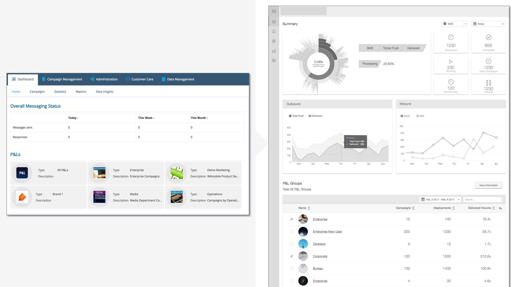
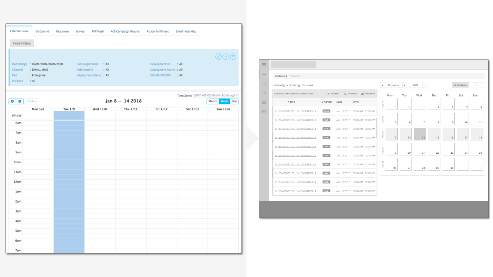
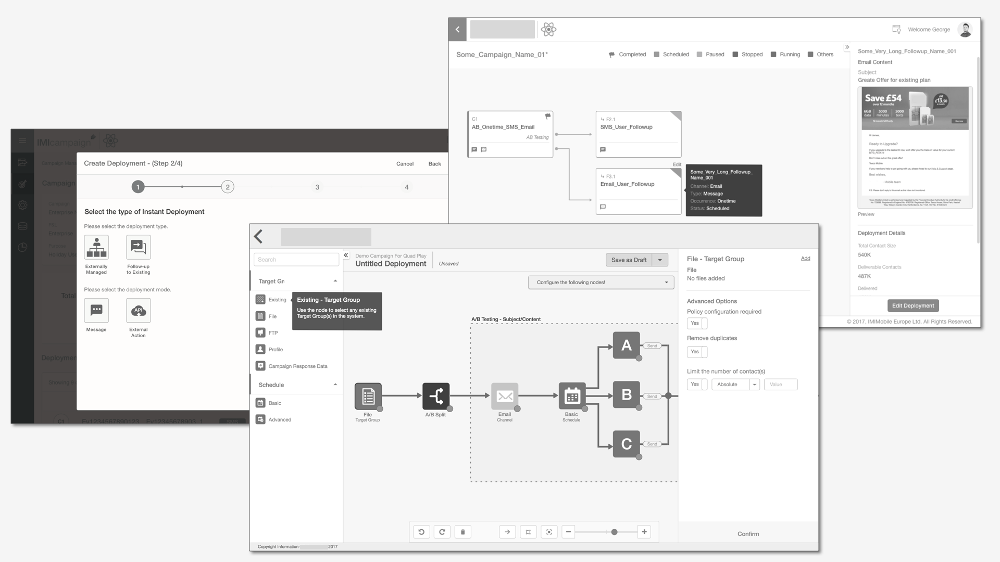

Integrated Campaign Management System
Redesign the existing multi-channel campaign management platform.
The Project
This project was a re-design of the existing deprecated campaign management web app to a manager-first business-driven approach at Imaginea Desgin, Pramati Technologies in 2017.
The Users
Marketing campaign managers who want to increase the campaign ROI and improve campaign CX.
My Role
User research - Interviews, Ideation, Interaction Design, Visual design.
Team
Two UX designers
Duration
The Problem Space
What are the core functions of the Campaign Management Tool?
Optimise the mobile campaign experience.
Built for the digital enterprise, this tool is trusted with the deployment of millions of cross-channel communications. The platform's mobile-first capabilities optimise campaigns for the smartphone, with enterprises using SMS, mobile push, MMS, and mobile responsive email, to maximise performance throughout the customer lifecycle.
Famed for their 'Priority' Campaigns’ to create one of the most engaged customer bases in various domains.
This tool is an integrated campaign management system. It offers a way for enterprises to instantly innovate, switching from poorly-integrated disparate systems to joined-up cross-channel communications that use the latest mobile-first capabilities.
From location-aware messaging to instant access to new mobile channels, IMIcampaign's features work together to increase campaign ROI and improve campaign CX.
User Research
User Interviews
We interviewed a total of 8 users.
1
Product Manager
(Expert User)
5
Operations staff
2
Developers
Research Synthesis
Insights from Contextual Enquiry and Observations
Users found the current campaign flow tedious and confusing.
There were numerous hidden menus and options which the users found difficult to navigate.
UI was dated and needed to be in line with the modern standards. Sales demonstration conversions were dropping due to this.
Multiple pop-ups on top of a single pop-up complicated the user and developer workflows.
User Personas
Key User Requirements
Keep track of the performance of multiple campaigns in a Profit and Loss Group (P&L) group.
Adhere to the mental model to the managers and help them create the business workflow of the campaigns.
A progressive display of information to increase the effectiveness of the information shown.
A visual display of information by moving away from the conventional tedious text-based form approach to get a better sense of the bigger picture of the campaign.
Ideation and Solutions
Solution Approach
Since there was no clear understanding of the performance of a campaign we decided to show the information as a dashboard on the landing page. We started to a very high-level block based wireframe which slowly got refined as had multiple discussions with the stakeholders.
Screen Wireframes - Before(Left) vs After(Right)
After further consideration and neumerous stakeholder meetings the next section shows the before-after impact.
 Dashboard
 Campaigns Calendar Page
 Campaign Deployment Canvas
Visual Designs - Monitoring a Campaign
This section of the tool describes out how a manager would login to the tool and make informed decisions using the real-time graphs and tabular data to drill down to the most granular detail about a campaign.
Visual Designs - Campaign Creation
This section of the tool shows how a manager would go about and create a campaign using the visual builder tool.
Design Deliverables
A good desgin is as good as its documentaion.
Keeping this in mind we created an elaborate Wireframe Specification docuemnt which detailed out the various components, graphs, charts and the screen level interaction elements which were used. Along with this, there were details about the ideal data and outcomes for data tables and charts. This was one document used as by the UI developemt team to understand and adhere to the interaction guidelines for the product.
To add to the Wireframe Specification document there was the Visual Specification docuemnt which detailed out the various components, graphs, charts and the screen level visual treatment of these elements. This was particularly mande developer-friendly by using specifications in 'rem' and percentage so that the developers can use it directly. There were colors, shadows, height and width of elements that needed to be defined in the form of a Styleguide.
 Typography, Colour Palettes and Iconography
Typography, Colour Palettes and Iconography Testing and Evaluation
Usability Testing
We conducted usability tests with 5 users. As the users were in a different geographic location we conducted remote usability test sessions with users considering both the budget and the timeline.
The overall reaction of the users was positive and they could appriciate the sense of structure and clarity that was brought by the design. The other thing that stood out was now they were sure about how and where a certain information was located. The refreshing morden UI was very pleasing to the users.
Conclusion
Impact on the business
This design overhaul has positively impacted the business and entirely transformed the product to compete with other competitors like Adobe Campaign Manager and Salesforce. This has reduced the overall timetaken to navigate through the product by 50% and decreased the create better targeted campaigns by at least 30% while reducing the handoff time by a massive 45%.
Reflections
As this was an enterprise level product the users were in a different geographic location hence it was very difficult to contextualize the importance of certain actions and user requirements. Although, the remote user interactions and expert user inputs helped us go gain as much context possible in the short time that we had. Hence, if given an opportunity I would like to spend more time with the users to better empathize how they use the system and conduct sessions to evaluate their interactions with the new system.